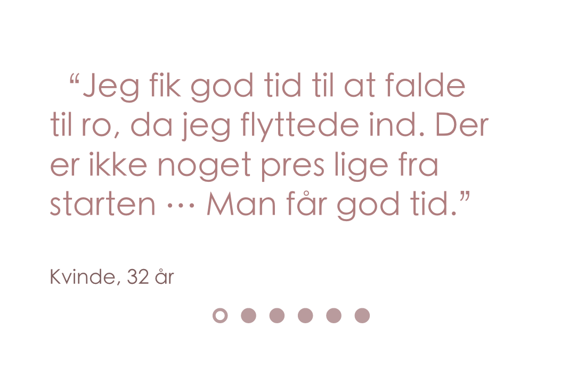

Forholdet starter
Forelskelse
Idealisering
psykisk vold starter i det små
Fortægning
Evt. andet vold starter f.eks fysisk eller seksual vold
Nomalisering af vold
Skam og skyldfølelse
Ansvar
Tab af selvtillid og selvværd
isolation
Tab af netværk

Hvad er vold?
Er jeg udsat for vold
Har du brug for hjælp
Børn på krisecenteret
Andet
Forholdet starter
Forelskelse
Idealisering
psykisk vold starter i det små
Fortægning
Evt. andet vold starter f.eks fysisk eller seksual vold
Nomalisering af vold
Skam og skyldfølelse
Ansvar
Tab af selvtillid og selvværd
isolation
Tab af netværk
Gentagelsen Efterhånden begynder han igen at blive utilfreds, og så er forholdet tilbage i spændingsfasen. Det er forskelligt hvor lang tid faserne varer, men efterhånden bliver genopbygningsfasen kortere og kortere, og voldsfasen bliver voldsommere og voldsommere. Det betyder også, at voldsepisoderne bliver hyppigere.
Spændingsfasen – optakten til voldsudbruddet. Manden opbygger en vrede, han bliver mere og mere utilfreds. Det kan være situationer, hvor han ikke får sin vilje, bliver jaloux eller at han bliver stresset over et barn, der kræver opmærksomhed/larmer/græder mv. Der er måske mindre voldsepisoder eller trusler. Kvinden forsøger at glatte ud, undgå konflikter og skabe balance igen.

Fortrydelsesfasen Fasen efter voldsudbruddet, hvor voldsudøveren ofte fortryder sine handlinger og er bange for at miste sin partner. Denne fase kan også kaldes genopbygningsfasen og “honeymoonfasen” fordi den ligner det forhold de havde i begyndelsen. Fasen er præget af mandens anger og løfter om bedring til partneren. Han bliver igen kærlig og giver hende opmærksomhed. Denne fase er med til at opretholde parforholdet, idet fasen giver kvinden håb om, at det er muligt at få et lykkeligt liv med partneren. Hun får et glimt af det, hun drømmer om og længes efter med sin partner.
Voldsudbrudsfasen Spændingen kulminerer – manden bliver voldelig. Her begår manden overgreb på kvinden eller træder ind over hendes grænser. Forud for fysisk vold ligger ofte lang tids psykisk vold. Volden udvikler sig hele tiden – skadernes omfang bliver større og større.
Hvad kan vi hjælpe dig med?
Pakkeliste
Ressourcer
Egen omsorg
Sikkerhed
Kontaktperson
Anerkend et voldeligt forhold Misbrug kan ske i enhver familie, når som helst, uanset ens alder, seksuelle orientering, indkomstniveau eller hengivenhed til hinanden. Lær mere om kendetegnene ved et usundt forhold.
Oplever du vold i dit forhold At forlade et voldeligt forhold kræver en hel del mod. Planlægning af sikkerhed betyder at vide, hvordan du får adgang til de mennesker, steder og ressourcer, der kan hjælpe, hvis du er udsat for vold.
Støtte, råd og vejledning Vi kan tilbyde dig støtte, råd og vejledning i en svær tid. Du kan henvende dig ambulant, og vi kan tilbyde dig en rådgivningssamtale, hvor vi taler ind i din livssituation, og ud fra dette yder råd og vejledning.